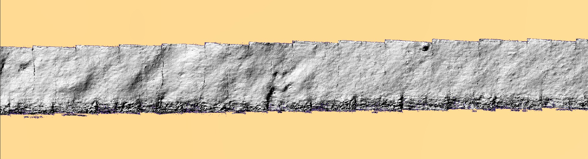
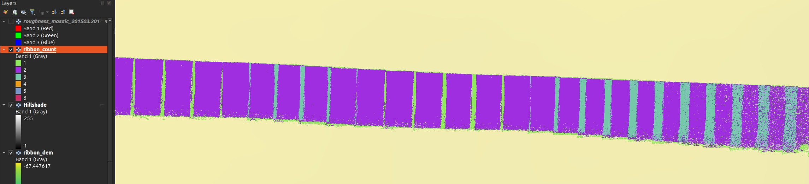

The Photogrammetric Seabed Ribbon¶
An along-track composite of a few hundred per-frame stereo micro-DEMs from one HabCam line: ~170 m of seabed at millimetre resolution, georeferenced in the survey CRS, delivered as GeoTIFFs you can drop straight into QGIS.
This is a script, not a panel
Unlike everything else in this section, the ribbon has no dock, no toolbar
button and no Settings page. It is scripts/build_ribbon.py in the
repository, driven from a terminal, and it is documented here because it
produces a map product you will want to interpret alongside the plugin's own
outputs. Wiring it into the UI is deliberately deferred until people have used a
few ribbons in anger. The reusable geometry lives in gt/ribbon.py and is
unit-tested against synthetic inputs with no network.

The tiling you can see is the seam error
Hillshading works on gradients, so it exaggerates exactly the thing a composite is judged on: the step where one frame meets the next. Those frame outlines are the 13.7 mm median seam measured below being made visible, not a compositing failure — 13.7 mm of step across a 3 mm cell is a steep local gradient and hillshade renders it as an edge. Judge the relief within a frame, and use the seam numbers rather than your eye for the joins.
Why it exists¶
The tool measures roughness inside a single camera frame and then uses it to interpret backscatter averaged over a footprint metres across. Between those two scales there was nothing:
| product | wavelengths it supports |
|---|---|
| a per-frame micro-DEM | ~3 mm … 1.2 m — one frame's footprint |
| MBES bathymetry on a 1 m grid | ≥ 2–3 m |
| a ribbon | 3 mm … 170 m — it spans the whole range |
γ₂ is fitted at the frame scale and extrapolated to the acoustic scale. A ribbon is the instrument that can test whether that extrapolation is legitimate. What it found is below, and the honest answer is not yet.
What you get¶
Three track-aligned GeoTIFFs in ribbon_work/:
| file | what it is |
|---|---|
ribbon_dem.tif |
1-band Float32 heights, NaN no-data |
ribbon_ortho.tif |
3-band RGB, co-registered cell-for-cell |
ribbon_count.tif |
observations per cell (1–6) — read this one |
All three are the same grid: 1256 × 48 339 cells at 3.00 mm, which is 3.77 m across × 145 m along, track-aligned.
Measured on this ribbon, the count layer breaks down as:
| observations | share of cells |
|---|---|
| 1 | 31.1 % — a single frame, nothing to cross-check against |
| 2 | 63.3 % |
| 3 | 4.8 % |
| 4–6 | 0.8 % |
So nearly a third of the ribbon rests on one frame. The 13.7 mm seam figure below describes the other two-thirds, where frames overlap and the seam can be measured at all.

Style it as Paletted / Unique values, not a stretch
A default linear stretch runs 1 → 6, and since 94 % of cells are 1 or 2 they land in the bottom fifth of the ramp — everything renders near-black and the layer reads as a silhouette. Classify it into its six discrete values and give 1 a colour that stands out; that is the reading that tells you which parts of the ribbon are corroborated.
The DEM will look flat until you hillshade it
ribbon_dem.tif holds absolute depth, and over 145 m the vehicle follows
the seabed down through −67.0 m to −74.9 m. The relief you actually came
for is ~50 mm — about 1/150th of that range — so a default stretch renders
a smooth along-track gradient and no texture at all.
Load it, then either apply a hillshade (scale-free, so millimetre bumps show at any zoom), or stretch a short sub-section to its local min/max. The orthophoto needs none of this.
Always load ribbon_count.tif next to the DEM
It is the ribbon's honesty layer. Where it falls to zero the frame was
turbid and the service returned insufficient_coverage — there is no
measurement there. Where it is 1 the height rests on a single frame with no
cross-check. The seam quality quoted below only applies where two frames
actually overlap.
The grid is aligned to the track, not to north. That is not a cosmetic choice:
172 m of ribbon at 3 mm is ~57 000 × 400 cells track-aligned but ~41 000 × 41 000
in a north-up box — seventy times the cells for the same data. QGIS warps rotated
rasters to north-up for display, so the layer will report a larger bounding box and
an added alpha band; the file and its georeferencing are correct. --north-up is
available and guarded by --max-cells.
Running it¶
The GPU stereo service does the reconstruction; the script does the geometry. It posts either through FastGIS with your API key, or straight at a local service:
scripts/build_ribbon.py inventory # what lines exist
scripts/build_ribbon.py scan # score candidate strips
scripts/build_ribbon.py chain --start 6663 --n 296
scripts/build_ribbon.py fetch --start 6663 --n 296 \
--direct-url http://127.0.0.1:7871/roughness
scripts/build_ribbon.py inspect --start 6663 --n 296
scripts/build_ribbon.py composite
scripts/build_ribbon.py analyse
--direct-url is also read from ROUGHNESS_DIRECT_URL. Every response is written
to disk before any decoding, so re-compositing and re-chaining never re-fetch —
budget the fetch once. Throughput on a shared GPU is ~13 s/frame: 296 frames took
73 minutes and 312 MB of cache. simulate fabricates a cache from a surface with
a known spectrum, so the whole pipeline runs with no service at all.
Choose the strip by texture, never by relief¶
This is the finding that shapes everything else, and it is counter-intuitive enough to state plainly: consecutive frames can only be registered where the seabed has texture, and texture is uncorrelated with relief.
| strip | relief | link rate | median inliers |
|---|---|---|---|
| 55651–55954 | 5.80 m — the most in the survey | 57 % | 22 |
| 62911–63201 | 3.75 m | 0 % | 10 |
| 47465–47653 | 4.04 m | 0 % | 9 |
| 6663–6958 (chosen) | 4.21 m | 77 % | 239 |
Two runs with metres of relief registered on none of the pairs sampled — they
are featureless mud. Picking the strip by relief, which is the obvious thing to do,
would have chosen one of them. scan scores runs by
link_rate × relief × on_dem_fraction and stops with a proof once the leader beats
the relief of every remaining run (13 of 161 runs sufficed).
The strip with the most relief in the survey actually out-scored the winner marginally, and was still rejected: 22 median inliers against 239. Its texture is real but localised.
ORB needs help on this imagery, and the defaults will give you 0 %
A plain ORB + RANSAC scores 0 % on every strip. Four changes, each measured, were required: no preprocessing (CLAHE and flat-fielding both lowered the inlier count on frames whose mean grey is ~21/255), a loose Lowe ratio of 0.95, detection masked to the overlapping band (the platform advances ~45 % of a frame height, so over half the features have no counterpart), and a displacement prefilter before RANSAC plus a physical gate after it. The gate is not optional: without it RANSAC routinely returns a confident 15–25-inlier consensus on a completely wrong transform.
Pixels where they work, navigation everywhere else¶
The USBL is piecewise-constant. On the chosen strip its median per-frame step is 92 mm while the imagery shows the vehicle advancing 491 mm — so frames placed by raw navigation stack in clumps of about six and then jump.
The chain integrates the accepted links into a track, bridges unlinked pairs with the navigation, then rubber-sheets the result back onto the navigation over a 51-frame window: absolute placement stays with the USBL, relative geometry comes from the pixels.
| measured on strip 6663–6958 (296 frames, 172 m) | |
|---|---|
| link rate | 89.8 % (265 / 295 pairs) |
| median inliers, linked pairs | 309 |
| longest unbroken registered run | 119 pairs (mean 48) |
| frames placed from pixels / from navigation | 265 / 31 |
quality != ok |
2.0 % (6 frames, all insufficient_coverage) |
Two independent checks that the geometry is right, both of which a heading error or a body-axis sign slip would break: the chain's own end-to-end azimuth is 273.1° against a corrected navigation heading of 273.2°, and a focal length calibrated against navigation displacement returns 2507 px against the nominal 2480.28 — a ratio of 1.011.
A ribbon and a mosaic of the same stretch will not sit exactly on top of each other
They anchor differently, and both are behaving as designed.
A mosaic takes its absolute position from one frame's raw USBL fix — the reference frame. The ribbon places every frame at its chain-corrected position, which is the same USBL rubber-sheeted over a 51-frame window so the piecewise-constant staircase is averaged out. Measured across the 296 frames of this strip, chain minus raw nav is:
| median | 0.72 m |
| 90th percentile | 1.52 m |
| maximum | 2.75 m |
| mean vector | 0.02 m — no systematic shift |
The mean being ~2 cm is the point: the two agree on where the line is. What differs is local placement, because the mosaic inherits whatever error sits in its one anchor fix while the ribbon has had that removed by the imagery. At row 6900 — the index that mosaics best — the two differ by 1.39 m.
Where the ribbon fell back to navigation (31 of 296 frames here) the two agree exactly, because there is no correction to differ by. So the disagreement is largest over textured ground, which is the opposite of the intuition.
This is largely fixed. GroundTruther now sends the mosaic an explicitly smoothed USBL track rather than letting it anchor on one raw fix, which brings the same comparison to a median 0.11 m (p90 0.51 m) — 84 % closer. The residual ~0.1 m is the pixel chain itself, which a mosaic has no way to reproduce and does not need to. The figures above are what you see if that smoothing is unavailable, which happens when the metadata carries no USBL columns or no heading and the mosaic falls back to anchoring on the reference frame.
Either way, for overlay work trust the ribbon locally: its relative geometry comes from the pixels (median step 491 mm against the nav's clumped 92 mm).
The first and last ~25 frames keep a staircase
Within half a smoothing window of either end there is not enough data to average the navigation's six-frame sawtooth away. Trim the ends before measuring anything, or use a longer run.
Vertical levelling, and what it costs¶
The dominant vertical error is not the photogrammetry. V_Depth is quantized
to 10 mm and steps frame-to-frame with σ = 82 mm — essentially the whole of the
measured per-frame scatter. The micro-DEMs know their own relative height far
better than that wherever they overlap, so levelling solves per-frame offsets from
the overlap medians and keeps only the high-frequency part, leaving the datum with
the vehicle.
| seam error where two frames overlap | before | after |
|---|---|---|
| pixel-linked pairs (n = 356) | 62.0 mm | 13.7 mm |
| nav-bridged pairs (n = 38) | 235.5 mm | 119.3 mm |
| per-frame vertical σ | 139.9 mm | 60.4 mm |
Pixel-linked seams are 8.7× better than nav-bridged ones. That is the clearest
single argument for registering the frames at all — and a reason to read
ribbon_count.tif and the chain log together, because a seam's quality depends on
which kind of pair produced it.
Levelling is a trade, not a free improvement
It made the seams 4.5× better and simultaneously made the 1 m-binned profile
agree less well with the MBES (median |dz| 0.147 m → 0.185 m; correlation
0.971 → 0.924). The likely cause is that some large corrections — the 95th
percentile is 1.26 m — over-fit bad overlaps instead of repairing bad frames.
Levelling is on by default because internal consistency is what a spectrum
needs; --no-level ships the raw version. If you care about absolute depth
rather than texture, use --no-level.
Two results, stated honestly¶
The ribbon does not beat the altimeter on vertical accuracy¶
The bar is not zero. The vehicle's own -(V_Depth + Altimeter) already tracks the
MBES well, and on this strip it does much better than survey-wide:
| correlation | median |dz| | |
|---|---|---|
| altimeter baseline, this strip | 0.988 | 0.115 m |
| the ribbon, 1 m bins | 0.924 | 0.185 m |
So: the ribbon adds texture, not vertical accuracy. That is a legitimate result and it is what the product is for — millimetre-scale relief over a continuous stretch, not a better depth estimate. Note the baseline here is much better than the survey-wide 0.27 m, so this was a hard strip on which to win.
Does the power law cross the gap?¶
The per-frame roughness fit is two-dimensional and isotropic; a ribbon profile measures the one-dimensional spectrum. Integrating out the unmeasured cross-track wavenumber gives a closed form with no free parameter — so both the exponent (γ₁ = γ₂ − 1) and the amplitude are predicted, and the ribbon can check both.
Measured in the 1.2–3 m band: 9.45× (+9.8 dB) more power than the per-frame law predicts, with a fitted γ₁ = 2.29 ± 1.56 against a predicted 1.97.
Do not quote this as an answer
Both error bars are large, and the conclusion is suggestive, not settled:
- The slope is unconstrained. ±1.56 spans essentially every physically plausible exponent. The band is one third of a decade wide — all a 145 m ribbon can offer — and that is not enough to fit a slope.
- The amplitude excess is only 1.7× above the ribbon's own noise floor. Independent per-frame vertical errors, held across each frame and changing every 0.49 m, put a nearly flat spectrum across exactly this band. At the measured σ = 60 mm the floor sits 1.7× under the measurement (14× using the robust σ = 21 mm, which excludes a handful of frames that are metres out).
What would settle it is now a number: per-frame vertical placement has to reach ≈ 6 mm, against the 60 mm achieved here. That is a vertical bundle-adjustment problem and the single thing standing between this product and a publishable answer.
Two supporting measurements, both real and both weak on their own: the MBES along-track spectrum gives γ₁ = 3.60 ± 0.16 over 2–40 m, far steeper than the per-frame 2.97 — but a 1 m grid is smoothed by its own gridding exactly there. And the ribbon's own gap-band fit sits between the two, which is what a gradual break would look like, at an error bar that makes it a remark rather than evidence.
The ribbon is a weak instrument for orientation questions
Re-compositing with the pre-fix 180°-wrong heading moves the seam error only 67.1 → 85.6 mm, because rotating a frame about its own centre preserves its mean and this seabed is smooth at the 1.2 m frame scale. The heading derivation was settled on the registered image chain, not on seam quality — don't cite seams as georeferencing evidence.
Related¶
- Seafloor Roughness — the per-frame micro-DEMs a ribbon is built from, and the Mosaic builder, which is the in-plugin way to composite frames when you want a picture of a patch rather than a metric profile of a line.
- Image metadata — the navigation columns the chain consumes, and which position is the calibrated USBL fix.
docs/photogrammetric_ribbon.mdin the repository — the full developer-facing account, including the compositing maths and the rejected alternatives.